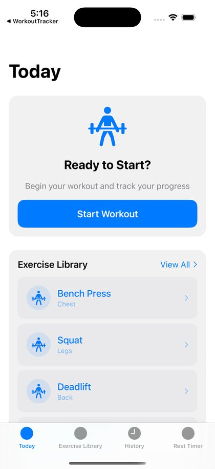
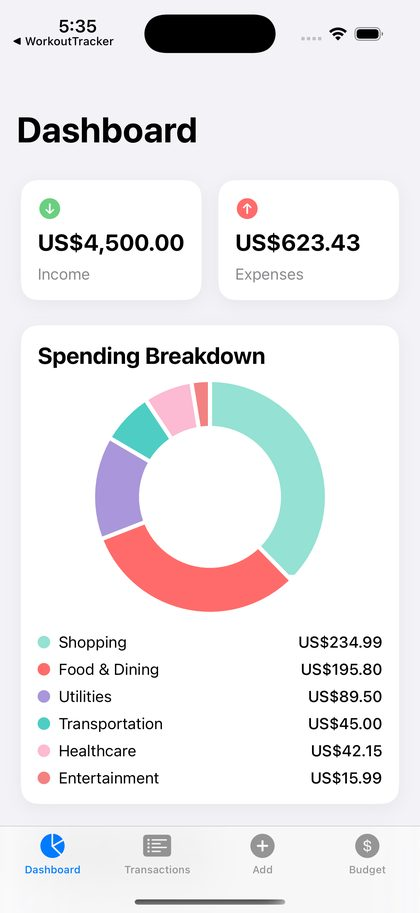
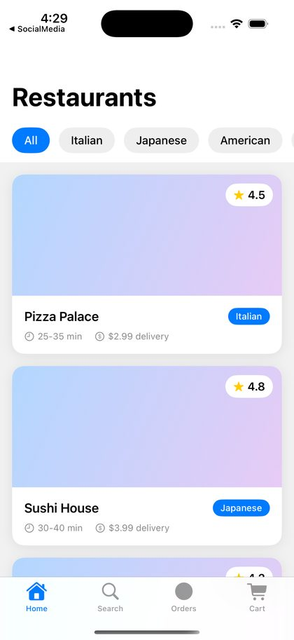
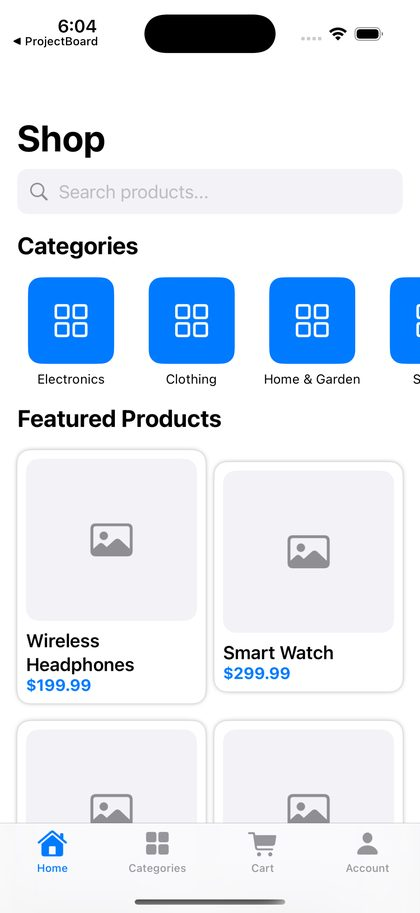
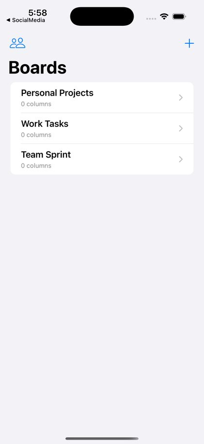
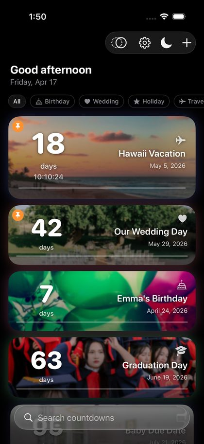
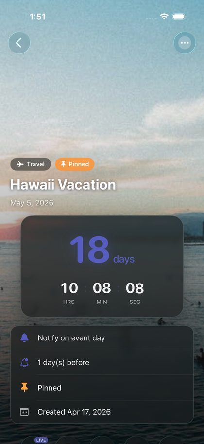
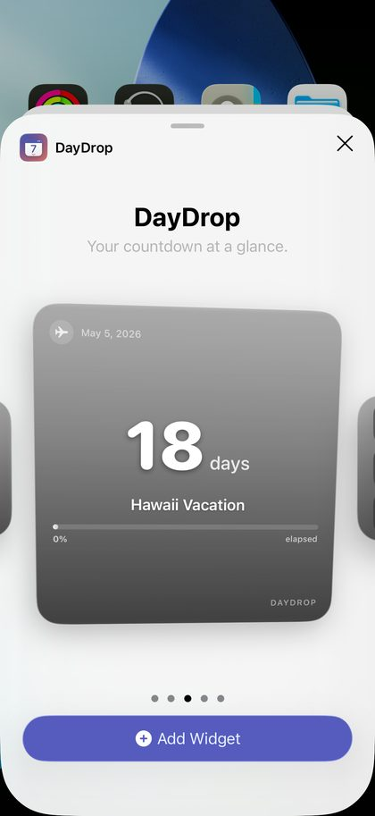

I am a quality engineer. For fourteen years I have tested financial software, where a bug costs somebody real money.
Right now that is bulk payments at one of Canada's largest banks. Before that it was insurance and wealth platforms for Manulife and Canada Life.
These days much of my work is building test tools with AI, and checking what AI builds before anyone relies on it.
St. Thomas, Ontario (London area). Open to relocation, or remote and hybrid. Canadian citizen.
I work on a bulk payments platform at a Big-5 Canadian bank: Kafka event flows, database and API validation, and a regression cycle that is now almost entirely automated. Nightly regression, smoke suites and release gates run in Jenkins.
Three tools came out of that work. I built each of them with AI coding tools, in days, and my team uses them every release.
Paste a user story or a requirements page. It returns structured test cases, as a workbook for review or as a file ready to upload into test management.
Follows a single payment from the payment network, through the database, to its Kafka event. It then writes the tracking record and a step-by-step evidence document with screenshots. It runs on a laptop or from Jenkins.
Generates valid bulk payment test files across transaction types, with one configuration per environment, so the same scenario runs everywhere.
Described at a high level on purpose. The client's systems, code and data stay with the client.
You describe an app in one sentence. It plans the app, writes native SwiftUI, compiles it, repairs what breaks, launches it in the iOS Simulator and streams it to your browser.
The part I spent the most time on is everything that stops a model's output from reaching a user unchecked: about 970 rules that run before any build, a repair loop that tries three times, and a final step that launches the app, takes a screenshot and reads the crash log.





Five apps it generated from one sentence each. The screenshots were taken by its own checking step, January 2026.
| A new app, from idea to running | 66% | 333 generations |
| A change made by chat | 83% | 166 modifications |
| Failed builds rescued by the repair loop | about 46% | |
| Time to a running app | 2.4 minutes | median of successful runs |
From the pipeline's own logs, January to April 2026.
Countdown widgets with generated backgrounds, Live Activities and iCloud sync. I built it with an AI coding agent and tested it the way I test at work: XCUITest regression suites, checks on real devices, and checks against sources the AI did not write.
One example. Before the lunar-calendar release I checked every date from 2026 to 2028 against the Hong Kong Observatory's official tables: 1,078 days, no mismatches.



The pages are produced by a chain of AI agents on a schedule. What I care about are the checks between them. The writer cannot add a fact the researcher did not source. A fact-checker fetches every source again and holds the page when in doubt. A reviewer opens the built page on desktop and on a phone. Nothing is published without a pass.
Paste a URL and get a plain-English report on accessibility, security headers, SEO, performance and how the page renders across browsers. The scanner drives real browsers through Playwright.
I tested it the way I would test a bank's checkout: 11 Playwright end-to-end specs for the scan and purchase flows, and 9 API test suites for feature gating, checkout and the scan routes.
A way to score test cases written by an LLM. It combines fixed checks (schema, coverage of acceptance criteria, duplicates, steps that cannot be tested) with an LLM as judge. In the committed run, coverage read 100% while the judge marked 9 of 52 cases as incomplete.
A macOS menu-bar app that turns a coding agent's live activity into synthesized radio sound.
One command that sets up an llms.txt and a robots.txt that knows about AI crawlers, for any site.
A screen recording goes in and a short vertical video comes out, with voiceover and synced captions.
Four language models argue three rounds to a verdict. I shelved it before launch in January 2026 and kept it public for its test suite.
Quality for bulk payments across Kafka, Oracle, MongoDB, SQL Server and mainframe. I lead a team of four to six quality engineers: I plan and assign the testing for each release and review the team's tests and automation code. Earlier hands-on framework work was in Java, Selenium, Cucumber and REST Assured.
Led testing across onshore and offshore teams: estimates, strategy, sign-off, triage and mentoring. Automation in Selenium with Java, TestNG, Cucumber, Robot Framework and UFT, with Jenkins. API, ETL and data testing. Best Innovation awards in 2014 and 2016, and Best Project in 2014.
Hands-on, over the years. Java, Selenium, Cucumber, TestNG, REST Assured, Jenkins.
Payments and data. Apache Kafka, Oracle, SQL Server, MongoDB, mainframe.
Built with AI coding tools, then reviewed and debugged by me. Python test tools, Swift and SwiftUI apps with XCUITest suites, FastAPI and Next.js services.
Working with AI. Routing work across several models, holding output to a schema, validation and repair loops, scoring model output, tracking tokens and cost.